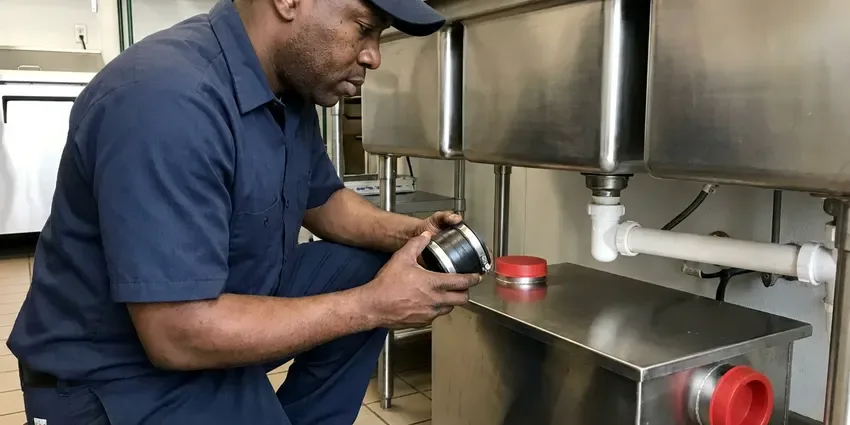

Kitchen Plumbing in Rogers, AR
DGR Plumbing sets sinks, swaps disposals and hooks up dishwashers across Rogers, AR, with a flat price before the first wrench turns.
- Sinks, Faucets and Drains
- Same-Day Visits Most Weekdays
- InSinkErator Service and Installs
- Licensed and Insured Crews

Book a Kitchen Plumber in Rogers, AR
Turn the shutoff valves under the sink clockwise to stop a leak, then give us a call.
Everything Under the Kitchen Sink, Handled in Rogers, AR
DGR Plumbing works on every pipe in the cabinet under your kitchen sink, from the 3/8 inch angle stops to the 1-1/2 inch trap and the wall stub behind it. Losing the kitchen sink throws off the whole house. We aim to fix it on the first trip.
Some of what we do:
- Disposal replacement, repair and first-time installs
- Angle stops, air gaps and high loops
- InSinkErator, Waste King and Moen disposals

Additional Kitchen Plumbing Services in Rogers, AR
Our kitchen plumbing services in Rogers, AR cover sinks, disposals, dishwashers, and grease traps so your kitchen stays clean, safe, and fully functional.




Grease Trap Installation in Rogers


Customers
Why Choose DGR Plumbing for Kitchen Plumbing in Rogers, AR?
Every job is tested under real use. That means both bowls filled, the disposal run, the dishwasher sent through a drain cycle and a dry paper towel held to each joint before we pack up.
- Root Cause Repairs, We fix the reason it leaked, not just the drip you can see.
- Stocked Trucks, Disposals, traps, valves and supply lines are on board every day.
- We Know the Local Housing, Our plumbers see the same galvanized drains and worn angle stops in Rogers homes every week.
Citywide Coverage
Every part of Rogers is on our weekly route. Response times stay short. Because we are already working nearby most days, we can often fit an urgent kitchen leak between scheduled calls on the same afternoon.
Experienced Team
Our crew also works in commercial kitchens on three-compartment sinks, floor sinks, hand sinks and grease interceptors. Commercial jobs run on a clock. That background helps restaurant owners pass inspections, since our plumbers know what the inspector looks for on a trap and a floor sink.
Safety-First Approach
We install dishwasher air gaps or high loops, proper traps and approved disposal connections to meet Arkansas plumbing code. Wiring is done with the power off. Without an air gap or high loop, dirty sink water can siphon back into the dishwasher, and that is the reason the rule exists.
Trusted Certified Rogers Plumbing Services Professionals
At DGR Plumbing, we take pride in licensed, certified plumbing services throughout Rogers, AR. Credentials matter in this trade. Every repair, install and maintenance visit follows strict safety and quality rules, and the plumbers doing the work carry recognized industry credentials.
Call Us Now PHCC Plumbing Contractor Recognition
PHCC Plumbing Contractor Recognition Better Business Bureau (BBB) Accreditation
Better Business Bureau (BBB) Accreditation Angi Certified Pro
Angi Certified Pro ISO 9001 Quality Management Certification
ISO 9001 Quality Management CertificationSinks, Disposals and Drains in Rogers, AR: How We Handle Them
Replacing an Old Kitchen Sink in Rogers
Pulling an old cast iron sink takes two people and a putty knife, since they are heavy and usually caulked in tight. The counter cutout gets measured first. A new sink has to match that opening or the counter has to be trimmed, and we tell you which before you buy. The drain gets rebuilt to suit the new bowl depth.

Disposal Installation and Upgrades in Rogers
Most families do fine with a 1/2 horsepower unit, though heavy cooks and big families get more from 3/4 or 1 HP. Each install gets a new mounting assembly, a new discharge tube and a punched dishwasher knockout if you have a dishwasher. We run it with water before we go. A dry towel goes around the flange and discharge tube after.
Disposal Repair and Replacement in Rogers, AR
A disposal that hums but will not spin usually has something wedged in it. We cut the power, work the flywheel loose with a 1/4 inch hex key from underneath, pull out the bottle cap or bone, and press the red reset button before we run it again. Leaking units are another matter. A drip from the bottom of the housing means the internal seal failed, and that unit has to be replaced.
Recurring Kitchen Clogs in Rogers, AR
Grease, rice, pasta and coffee grounds build up in the trap and branch line over months, not days. We clear the line with a cable sized for kitchen pipe and can camera it if the clog keeps coming back. Sometimes the pipe itself is the problem. A sag in the branch line or a drain arm with too little slope will hold grease no matter how often it gets cleaned.
Kitchen Faucet Repair and Replacement in Rogers
Most single-handle kitchen faucets drip because of a worn cartridge, and Moen, Delta and Kohler all sell the part by model. We bring common cartridges. When the body is corroded or the pull-down hose is leaking under the sink, a new faucet usually costs close to what the parts and labor would.
Disposal Replacement in Rogers, AR
Disposals last about eight to twelve years. Water dripping from the bottom of the housing means it is finished. We drop the old unit, check the mounting ring, install the new one and reconnect the dishwasher hose using a fresh clamp so it does not leak at the inlet. We haul the old one away.
InSinkErator Models We Service in Rogers
Badger units are the basic line, with a single grind stage and a 1/3 to 3/4 horsepower motor. Evolution models add grind stages and sound insulation, which matters in an open kitchen, and some carry longer in-home warranties than the basic line does. We stock the common sizes. Older InSinkErator units with a good motor can usually be repaired.

Kitchen Drain Clog Removal in Rogers, AR
Water rising in the second bowl when the first drains tells us the clog is past the trap, in the branch line behind the cabinet. We run a 1/4 or 3/8 inch cable from the cleanout or the trap arm, and on grease-packed lines we follow up with a jetter. Drain chemicals do little to grease. What they do is sit in the trap and weaken the glue joints.
Kitchen Plumbing Near Me in Rogers, AR
Local plumbers know local pipe. In older Rogers, AR homes we tend to see galvanized drains, and newer ones have PVC, and that changes how we clear a clog and what we replace. Before we quote, we tell you which one you have so the price fits the real pipe behind the wall.
Searching for a kitchen plumber near you in Rogers usually means water is already on the cabinet floor. Our plumbers work Rogers daily and can usually reach you within a few hours. Close the angle stops first. When you call, say whether it is the supply line, the trap or the disposal leaking so we bring the right parts.
DGR Plumbing at a Glance
- Fully licensed plumbing team covering Rogers, AR
- 24/7 emergency service with same-day scheduling
- Upfront, flat-rate pricing before work begins
- 4.8-star rated by 871+ Arkansas customers
Rogers Map
Rogers Information
- Population
- 74,035
- Area codes
- 479/501/580
- Service area
- Rogers and towns within a 40 mile drive
- Nearby
- Bentonville, Springdale, Bella Vista, Fayetteville
Grease, coffee grounds and old galvanized or cast iron drain pipe are what slow most kitchen sinks down in Rogers, AR, and a clean trap and branch line fixes most of it.
Talk to a Plumber
Call DGR Plumbing for honest, reliable plumbing from people who know the trade in Rogers, AR.
Our Specialized Plumbing Services in Rogers, AR
At DGR Plumbing, we handle the full list of plumbing services across Rogers, AR. From leak detection to full system installs, our team works fast and charges fair prices on homes and commercial properties alike. Explore our core services below:


What Happens When You Call About Kitchen Plumbing in Rogers, AR
Three steps, a flat price, and a test under real use before we leave your Rogers, AR kitchen.
Tell Us the Problem
Call (501) 251-9708 and tell us what is happening under the sink. We ask a few questions so the right parts come on the truck.
On-Site Look
Your plumber tests the disposal or opens the trap at your Rogers home, shows you what failed, and gives a written price.
Fix It Right
After your approval, the plumber fixes it and tests it the way you will use it, then cleans up the cabinet.
Frequently Asked Questions About Kitchen Plumbing in Rogers
Trap and supply line fixes are usually $125 to $300. Disposal installs run $250 to $650 with the unit, kitchen sink installs $350 to $900, and commercial grease trap installs often start near $1,500. Prices are flat.
Moen, Delta, Kohler, American Standard and Pfister faucets are all ones we install and repair, along with InSinkErator, Waste King and Moen disposals and most other supply house brands. Parts for the common models ride on the truck. Store-brand faucets are trickier because their cartridges are often not sold on their own.
Slow drains, a sour drain smell, gurgling during the dishwasher cycle and a disposal that hums without grinding are the usual signs. Check the cabinet floor too. A warped or stained cabinet base means a slow leak has been going for a while.
A jammed unit under eight years old is worth repairing. A leaking housing or a failing motor means replacement is the smarter spend.
Snugging a trap nut is a fine DIY job. Disposal wiring, dishwasher drains and grease traps are better left to a plumber, since mistakes there lead to leaks and failed inspections.
Swapping a faucet or clearing a clog usually does not need one. Relocating a sink, adding a drain or altering the waste and vent lines usually requires one, though each jurisdiction sets its own rules. We check Rogers rules before we start.
Two to four hours covers most of them, including the sink, faucet, strainers and trap. New drain lines add time. If the new sink is deeper than the old one, the trap and drain arm may need to come down, which adds an hour or so.
Plan on two to four hours for a standard sink swap when the counter opening fits and the drain lines are in good shape. Undermounts take longer. Cutting the counter, changing the cabinet or moving the drain arm can stretch it to a full day.
What Our Customers Say About Our Plumbing Experts

Rachel N.
Hard water was leaving white crust on every faucet and our dishwasher was struggling. The tech tested the water, recommended a softener sized for a family of five, and installed it with a bypass valve in one afternoon. The spots on our glasses are gone.
Water Softener · Bella Vista, AR
Brian W.
I smelled gas behind the dryer and called right away. The plumber found a corroded flex connector, replaced it, and pressure tested the whole line before turning the gas back on. He let me watch the gauge hold steady for fifteen minutes.
Gas Line Repair · Rogers, ARLisa C.
Water was pouring out from under the washing machine on a holiday weekend. DGR Plumbing talked me through closing the valves over the phone and had a plumber at the house within ninety minutes. It was a burst fill hose.
Emergency Plumbing · Springdale, ARGreg S.
I manage a small strip center with six tenants. DGR Plumbing handles our annual backflow testing and fixed a recurring clog in the shared sewer line that had been backing into the nail salon. Their reports come in clean and on time.
Commercial Plumbing · Rogers, AR
Tyler J.
We bought a taller comfort height toilet for my dad, who just had knee surgery. The plumber pulled the old one, found the flange was cracked, and replaced it before setting the new bowl. Took about two hours.
Toilet Installation · Bella Vista, ARMegan L.
Our upstairs tub drained so slowly that every shower turned into a bath. DGR Plumbing pulled a wad of hair out of the stopper and then snaked the line past the trap. Three months later it still drains fast.
Drain Cleaning · Conway, AR